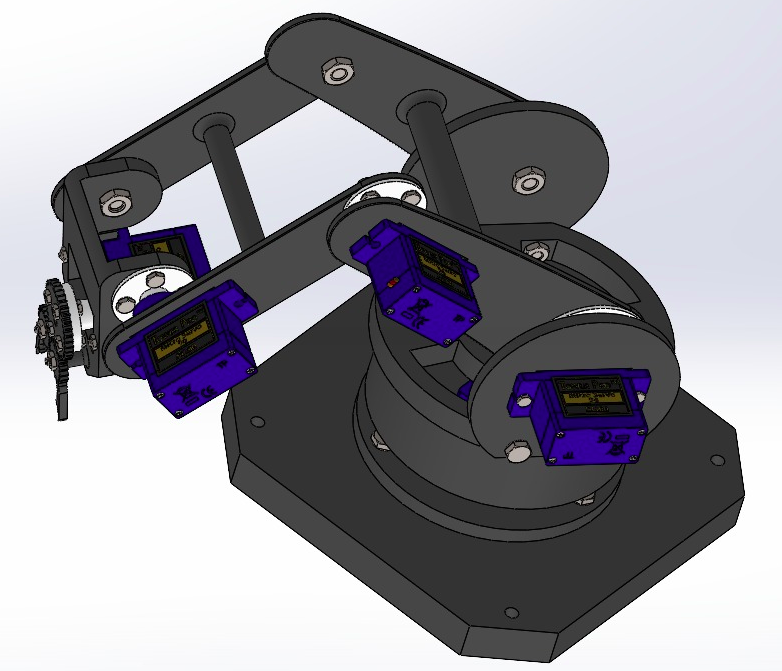
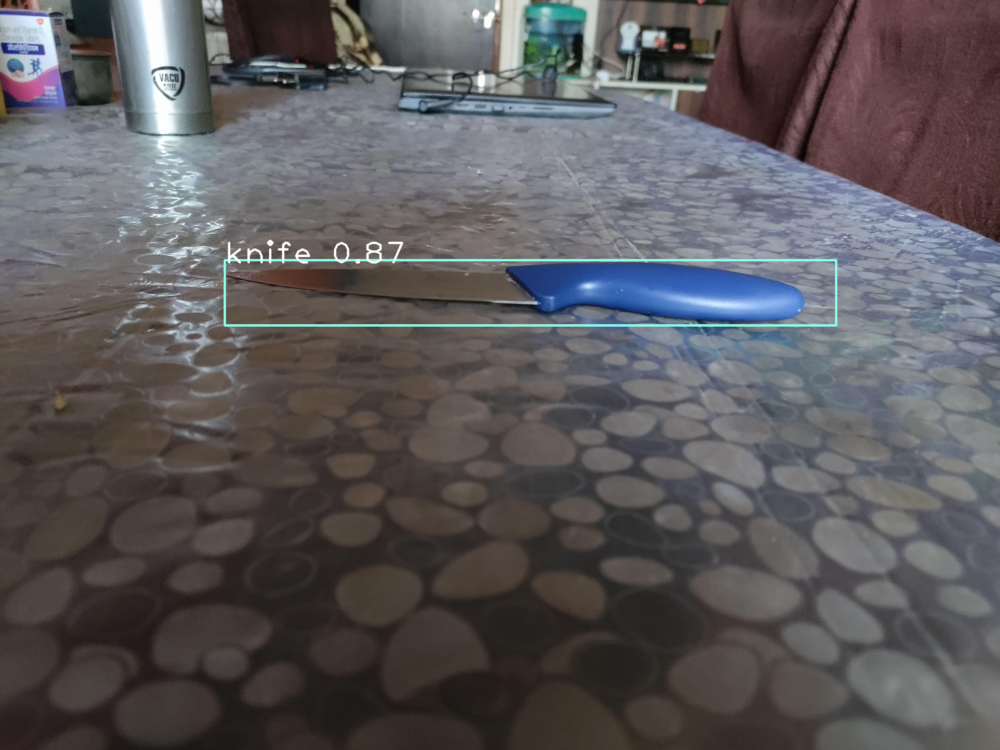

This is fully ROS integrated 4 DOF robotic arm, with a base that is capable of yaw motion and the other 3 DOF's are planar.It's main purpose is to sort cutlery like spoon,forks,chopsticks etc.This project was done in collaboration with NTU,Singapore. I worked on arm control for which I used move_it and ROS framework. Cutlery identification was done using an on arm-camera and Deep Learning based Models.
The complete package including the URDF and move_it files can be found at Cutlery Sorting Arm.
Arm control
The arm control is a implementation of move_it planning framework on a custom URDF.Also we have used a custom IK algorithm as there was no IK solver algorithm for 4 DOF arm in move_it
A small demo is given beliow showing the working of arm control:
fig 2: Short Demonstration Of Move_it
- As you can see we provide end goal to move_it which then computes all possible paths and gives the shortest and most feasible path.This is then published to arm controllers ad hence the movement in gazebo.
Hardware Design and Object Identification
We have made a custom design using Solid Works and conducted multiple tests in simulators like Gazebo,Pybullet for ensuring it's physical durablity.

We use Mask R-CNN, or Region-Based Convolutional Neural Network which is capable of achieving state-of-the-art results on a range of object detection tasks.So,basically the model tells the positon and type of object to ROS framework which then calculates start and end goal accordingly.

fig 3:Knife Detection